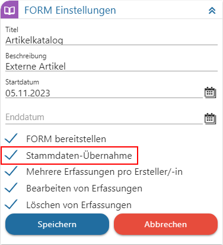
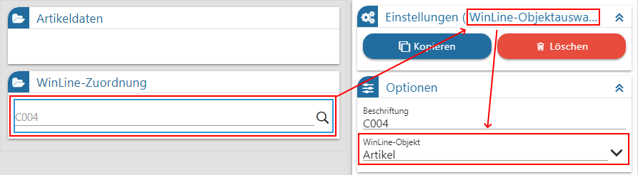
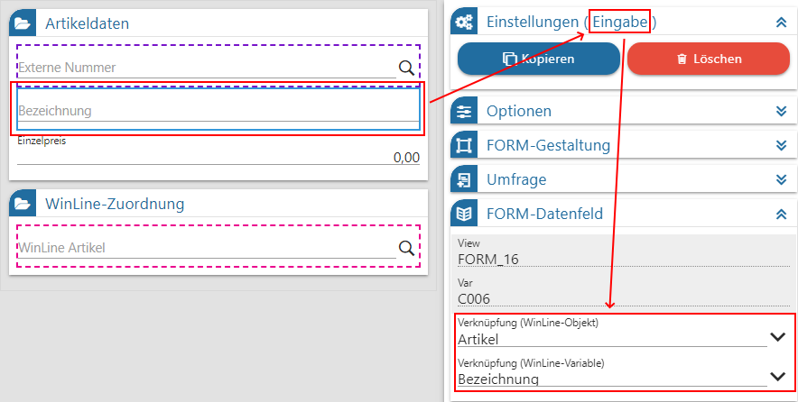
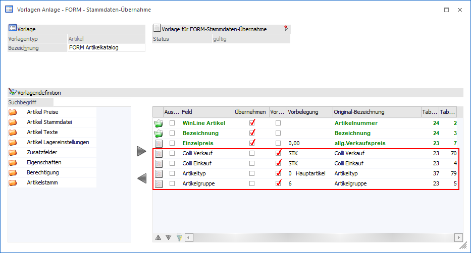

Die Grundlage einer jeden "FORM Datenanlage" ist die FORM, in welcher die Daten gehalten werden. Hierbei muss auf folgende Punkte geachtet werden:
ü 1. Allgemeine
Aktivierung
Zunächst muss in dem WinLine FORM Formular hinterlegt werden,
dass die FORM generell im Bereich "FORM Datenanlage" zur Verfügung stehen soll.
Dieses findet durch Aktivierung der Option "Stammdaten-Übernahme"
statt.

Hinweis
Nun wenn die Option "Stammdaten-Übernahme" aktiviert wurde, wird beim Speichern der FORM eine EXIM-Vorlage des Typs "FORM - Stammdaten-Übernahme" erzeugt.
ü Auswahl des WinLine
Objekts
Damit die WinLine in der Folge zuordnen kann, um was für Daten es
sich handelt, muss eine "WinLine-Objektauswahl" enthalten sein. In dieser wird
definiert, um welches WinLine Objekt es sich handelt bzw. handeln
wird.

ü Verknüpfung zwischen FORM und
WinLine Objekt
Bei jedem relevanten FORM-Feld muss eine Verknüpfung zum
jeweiligen Stammdatenfeld der WinLine hinterlegt werden (FORM-Eingabefeld =>
WinLine-Objekt und dessen Variable).

ü Anpassung der Vorlage des Typs
"Stammdaten-Übernahme"
Wurden die vorherigen Hinterlegungen bzw. Zuordnungen
getroffen, so wird die WinLine beim Speichern der FORM automatisch eine
EXIM-Vorlage des Typs "FORM - Stammdaten-Übernahme" erzeugen.
In dieser
können alle ggfs. notwendigen Anpassungen getätigt werden (WinLine START -
Vorlagen Anlage - FORM - Stammdaten-Übernahme). Hierzu zählen u.a. die
Vorbelegung von Pflichtfeldern, wenn diese nicht via Verknüpfung (FORM und
WinLine Objekt) belegt werden.

Achtung
Wird die Vorlage mit der Grafik gekennzeichnet bzw. der Status als "ungültig" ausgewiesen, dann handelt es sich um eine ungültige Vorlage. D.h. in der Regel, dass nicht alle Pflichtfelder mit einem FORM-Feld verknüpft oder die Pflichtfelder mit einer Vorbelegung versehen wurden.